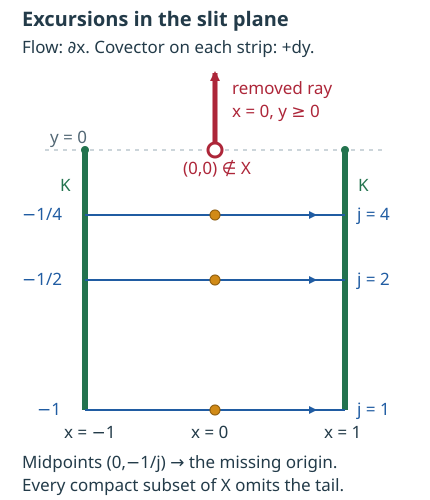

AN-04 · CC0; linked components retain their own terms
Global solvability and the excursions of characteristics
Local existence near an escaping compact set does not by itself produce a solution on the whole manifold. The additional geometry concerns returns: a characteristic may start and finish over one fixed compact set while making excursions that approach infinity or a missing boundary point. This lesson connects those excursions to singular support and to global existence modulo a smooth error.
Let X be a Hausdorff, second-countable smooth manifold without boundary, of dimension at least one. Use scalar complex half-densities, D=−i∂, and the integrated pairing (u,v), linear in u. Let P∈Ψ1,0m(X) be properly supported, with a real homogeneous principal symbol p, of degree m∈R. Assume global real principal type: no complete characteristic strip remains over a compact subset of X. Completeness means the maximal strip, not necessarily an infinite interval of the original degree-m Hamilton parameter.
The complete local ingredients are smooth propagation, Sections 2–5; fixed-order propagation, Sections 1–5; compact-tube quantization, Sections 1–5; and finite singular-ray realization, Sections 1–3. The realization gives a compactly supported distribution of any specified Sobolev threshold on any nontrivial compact characteristic segment with injective cosphere projection, with forcing singularities at exactly its two ends. Compact-set solvability, Section 1, supplies the full order normalization and homogeneous-lift argument.
The complete closed-graph and seminorm-extension proofs, Sections 14.4–14.7, retain the exact AN-03 arguments. The complete test-space companion, Sections 14.1–14.2, proves the full seminorm topology, closed-subspace and smooth-completeness facts. The fixed-support Sobolev companion S1–S4 supplies finite distributional order and every real Fourier weight. Proper Sobolev mapping G1 and coordinate transfer M2 supply the all-order smooth continuity. Ordinary adjoints and proper operators and scalar distribution topology include their exact half-density pairings.
PS5 constructs the compact exhaustion, smooth partitions and positive cotangent norm. Finite-coordinate flows NF1–NF7 prove uniqueness, smooth dependence and maximal continuation. The finite calculus and compactness proofs, integration and Taylor proofs, and exponential proof supply the scalar inputs below. Every dependency is connected in the exact proof map. No proof is replaced by an external citation.
Norm convention. A positive smooth density ρ can be constructed by summing positive coordinate densities with the locally finite partition in PS5. Their changes of coordinates have positive absolute Jacobian, so the sum defines a smooth positive density globally. Its positive square root trivializes the half-density line; write v=hρ1/2 and set ∥v∥∞=sup∣h∣ when v has compact support. On a fixed compact set the smooth positive coordinate factors and their inverses are bounded. This gives exactly the equivalent compact norms used in the argument.
Self-checked by the writing AI.
1. Three conditions, with their exact quantifiers
Consider:
(A) Global existence modulo smooth functions. For every f∈D′(X), there is u∈D′(X) such that Pu−f∈C∞(X).
(B) Control of adjoint singular support. For every compact K⊂X, there is a compact K′⊂X such that
v∈E′(X),singsupp(P∗v)⊂K⟹singsuppv⊂K′.(GS1)
(C) Control of characteristic excursions. For every compact K⊂X, there is a compact K′⊂X containing every characteristic interval whose two endpoints lie over K.
Theorem 1.1. Under the stated global real-principal-type hypotheses, (A), (B) and (C) are equivalent.
The compact bound may depend on K, but it cannot depend on the particular interval or the particular adjoint input. All intervals and all compactly supported distributions are included. The right side of (A) permits a global smooth error; it does not assert exact surjectivity of P:D′→D′.
Fix a positive degree-one cotangent norm w, and normalize by p=w1−mp. On the characteristic set,
Hp=w1−mHp.(GS2)
The full normalization and homogeneous-lift proof in the preceding lesson shows that the projected field W is smooth on the positive cosphere bundle and that a curve confined over a compact set has a complete homogeneous lift. The radial equation has the form dlogw/dt=a, with a bounded on every compact cosphere set, so neither fiber zero nor fiber infinity is reached in finite normalized time. We may therefore work with W for every real m, without invoking a global order-changing parametrix.
There is no stationary characteristic point of W: its constant projected curve would lift to a complete strip over one point. There is also no periodic projected orbit: its compact projected cycle would lift to a complete strip over a compact set. Uniqueness of the ordinary differential equation now makes every finite projected characteristic interval injective. Thus every nontrivial finite interval satisfies the precise cosphere condition of the finite-ray realization.
2. Singular support is controlled exactly by excursions
(B) implies (C). Enlarge the compact K′ supplied by (B) to contain K. Given a nontrivial compact characteristic interval with endpoints over K, apply the full finite-ray realization to P∗, whose principal symbol is the same real p. Choose threshold zero. The resulting v∈E′(X) has its entire interval as wavefront set, and its adjoint forcing has wavefront set equal to the two endpoint rays. Consequently its forcing singular support lies in K, while its singular support contains the base projection of every point of the interval. Formula (GS1) puts that entire projection in K′. Degenerate one-point intervals are already contained in K.
(C) implies (B). Suppose singsupp(P∗v)⊂K, with v compactly supported. Enlarge the bound in (C) to contain K. Elliptic regularity removes every noncharacteristic point of WF(v) outside K. If a characteristic point over x∈/K′ remained, propagation would retain its singularity in both directions until a projected curve reaches a point over K.
Both directions cannot reach K: the finite interval between those two visits would contain x, contrary to (C). At least one maximal half-orbit therefore avoids K. Parametrize it outward by t≥0, using W or −W as appropriate. Every finite piece of that half-orbit remains in WF(v), hence over the compact set suppv. The compact ODE continuation argument makes its normalized time extend to infinity.
Here is the full limiting argument. For times tj→+∞, select a subsequence of projected points converging to z in the compact cosphere bundle over suppv. Fix T>0. For large j, the intervals [tj−T,tj+T] lie in the half-orbit. Compact ODE bounds and continuous dependence show that the solution through z, on [−T,T], stays over suppv. The same argument extends it for every T; uniqueness identifies the extensions. Its complete homogeneous lift stays over that compact set, contradicting global real principal type. Therefore no such x exists, and (GS1) follows.
The same argument with forcing smooth everywhere gives the useful special case
v∈E′(X),P∗v∈C∞(X)⟹v∈Cc∞(X).(GS3)
This statement does not say that the smooth compact kernel vanishes.
3. Unbounded excursions obstruct global existence
We prove the contrapositive of (A) implies (C), retaining the interval-selection and summation details.
Suppose (C) fails for one compact K. Choose an increasing compact exhaustion Bj, with K⊂B1. At step j, enlarge Bj by the base projections of the finitely many previously selected intervals. Failure of (C) supplies another interval with endpoints over K and an interior point xj outside that enlarged compact set.
Cut this interval at the last visit to K before xj, and the first visit to K after xj. These visits exist because the original parameter interval is compact and the inverse image of K is closed. Denote the resulting projected interval by Ij=[aj,bj], and the point over xj by cj. Its open interior avoids K.
The interiors of different Ij are disjoint in the cosphere bundle. Indeed, two projected characteristic curves that meet coincide by uniqueness. On that common orbit, an interior is one connected component of the times whose base lies outside K; its bounding visits are exactly its endpoints. Overlapping interiors would therefore give the same excursion. But xj was chosen outside the base projection of every earlier closed interval. Endpoints over K may coincide; this does not affect the argument.
Apply the exact realization to the half-interval [aj,cj], with threshold −j. Obtain uj∈E′(X) satisfying
WF(uj)=R+[aj,cj],WF(Puj)=R+aj∪R+cj,uj∈/Hmic−j at every point of [aj,cj].(GS4)
Here the notation R+ means the positive cone generated by the projected covectors. Since xj∈/Bj and the initial endpoint lies over K, choose a compact base cutoff χj, equal to one near xj, supported in X∖Bj, and zero near the initial endpoint. Put
fj=χjPuj,gj=(1−χj)Puj.(GS5)
The exact two forcing rays give
WF(fj)=R+cj,WF(gj)=R+aj.(GS6)
The supports of the fj are locally finite: each lies outside Bj, and the exhaustion absorbs every compact set. Thus
f=j∑fj(GS7)
is one well-defined global distribution.
Suppose Pu−f were smooth for some u∈D′(X). A distribution has some finite negative Sobolev order on a neighborhood of a fixed compact set. Indeed, localize in finitely many charts. For a compact distribution of test-function order N, differentiating the compactly cut-off Fourier test gives ∣χu(ξ)∣≤C⟨ξ⟩N. Any s<−N−n/2 makes ⟨ξ⟩sχu square integrable. The full programme Fourier characterization of Sobolev spaces and all-real chart invariance identify this with Hs; take one sufficiently negative order for the finite chart family. Therefore u∈Hlocs near K.
Choose j with −j≤s. At an interior point sufficiently close to aj, the base still lies in that neighborhood of K. Formula (GS4) and Hmics⊂Hmic−j show that u−uj is not microlocally Hs there. At the other endpoint bj, however, u is microlocally Hs and uj is microlocally smooth: bj is outside its half-interval wavefront set, by injectivity of the full projected interval.
On the interval from that initial interior point to bj,
P(u−uj)=Pu−f+k=j∑fk−gj(GS8)
is microlocally smooth. The first term is smooth by assumption. Local finiteness makes the sum an actual distributional sum, with no limiting wavefront defect. Its only possible covectors are the ck, which lie in distinct open excursion interiors. The covector aj of gj is excluded from this shortened interval. Fixed-order propagation, in both directions and at every real m, now propagates the Hs membership at bj to the initial interior point. This is a contradiction. Hence (A) fails.
We used the full original interval, whose two endpoints are over K. The realized singular ray occupies only its first half. It is the regularity at the other original endpoint that supplies the contradiction.
4. A global estimate on the test space
To prove (B) implies (A), we construct a test-space estimate and use one global Hahn–Banach extension. For a compact set A, write D(A) for the smooth test sections with support contained in that set.
Choose compact exhaustions interleaved so that
Kj⊂Kj′⊂intKj+1,singsupp(P∗v)⊂Kj⟹singsuppv⊂Kj′.(GS9)
Take K−1=K0=K−1′=K0′=∅, justified by (GS3). At each later step add the previous bound and a prescribed ordinary exhaustion compact before selecting the next bound; this produces the stated nesting and exhaustion.
For a given f∈D′(X), we shall construct a seminorm q on D(X) and a locally finite sequence ψr∈D(X) such that
∣(f,v)∣+∥v∥∞≤C(q(P∗v)+r∑∣(v,ψr)∣),v∈D(X).(GS10)
On each fixed compact test support, q will be a finite sum of ordinary compact smooth seminorms. Thus its bound really defines a distribution. The half-density sup norm uses any fixed positive smooth fiber norm; norms on the fixed compact sets are equivalent.
For j≥0, let Vj consist of continuous half-densities supported in Kj+1′ such that P∗v is smooth on X∖Kj−1. Give it the topology of the global sup norm of v and all compact smooth seminorms of that forcing on X∖Kj−1.
This is a Fréchet space. The sup-norm component is complete on the closed fixed-support space of continuous sections. More explicitly, a uniformly Cauchy sequence of its scalar coefficients has a pointwise limit by completeness of C, and the same uniform Cauchy bound gives uniform convergence. The three-term continuity estimate makes the limit continuous; it is zero off the fixed closed support. The coefficient norm and the actual section norm agree by the convention above. A Cauchy sequence of forcing components has a smooth limit on the indicated open set, by the complete chart proof of the programme smooth-space theorem. Uniform convergence of the compact inputs implies distributional convergence of P∗v: pair against a compact test, use the smooth proper image under P, and bound the integral by the sup norm. Thus the two limits satisfy the same distributional equation. In detail, for a fixed test ϕ, the integral pairing with Pϕ is bounded by ∥vN−v∥∞∫Kj+1′∣(Pϕ)/ρ1/2∣ρ; the integral is finite. Its limit is zero. This identifies P∗v with the smooth forcing limit on the outer open set, without any pointwise assumption on P∗. Countable compact chart exhaustions give the complete metrizable topology. For clarity, smooth completeness on the open complement uses every compact chart seminorm, rather than one fixed-support space. A sequence Cauchy in all of them has uniform limits for every derivative on every compact coordinate box. The three-term estimate makes the limits continuous. The coordinate fundamental-theorem identity BF4 in the earlier test-space proof identifies their derivatives; overlapping limits agree and therefore define one smooth section. This gives convergence in every original seminorm. The metric BF2 proves metrizability and completeness of this countable topology, and the closed graph condition just established gives completeness of Vj.
By (GS9), restriction is an everywhere defined map
Vj⟶C∞(X∖Kj−1′),v⟼v∣X∖Kj−1′.(GS11)
Its graph is closed: convergence in its source implies distributional convergence to the same section as smooth convergence in its target. The complete programme Fréchet closed-graph proof therefore makes this restriction continuous.
One consequence will be used explicitly. If ∥vN∥∞ is bounded and P∗vN→0 smoothly on X∖Kj−1, then every compact derivative seminorm of vN outside Kj−1′ is bounded. Such a sequence is precompact in the local smooth topology there. To see this without another compactness theorem, use a finite chart cover on each exhaustion compact. The next derivative bound gives uniform equicontinuity of each derivative. Select convergent values on a countable dense grid by successive subsequences; equicontinuity gives uniform convergence on each compact. A diagonal choice treats every derivative and every exhaustion compact. The coordinate fundamental theorem of calculus identifies the compatible derivative limits as the derivatives of one smooth section.
For the precise diagonal step, cover the open outer domain by countably many coordinate boxes whose closures lie in larger boxes there. Derivative bounds on the larger box give a common Lipschitz constant Lα on the smaller box. A finite rational δ-grid covers its closure; for any two members of the sequence,
Qsup∣∂αvN−∂αvM∣≤2Lαδ+a in the gridmax∣∂αvN(a)−∂αvM(a)∣.(GSA1)
Bounded scalar values have convergent subsequences by the earlier finite-dimensional compactness proof. Take successive subsequences for the countably many boxes, multi-indices and rational points and then the increasing diagonal subsequence. First fix δ small and then use convergence on its finite grid in (GSA1). Every derivative is uniformly Cauchy on every smaller box. Pass to the limit in its coordinate-segment fundamental-theorem identity to identify one derivative with the derivative of the preceding limit. Iteration proves smoothness. The fixed transition identities pass to these local limits, so they form one global section. This proves the full local smooth precompactness just used.
4.2. Extend one estimate across one more compact set
Inductively suppose that
∣(f,v)∣+∥v∥∞≤CjQj(v),Qj(v)=qj(P∗v)+r∈Rj∑∣(v,ψr)∣,v∈D(Kj′),(GS12)
where Rj is finite and qj is a finite sum of compact smooth seminorms. At j=0, the only input is zero, so take C0=1,q0=0,R0=∅.
Fix εj>0. Choose increasing seminorms tN exhausting the smooth topology on X∖Kj−1, each a finite sum of compact derivative sup norms there. They vanish on functions supported in Kj−1.
Also choose a countable family χs∈D(X∖Kj−1′) detecting every continuous section on that open set. An explicit choice uses a countable chart atlas, dense countable centers and positive compact bump averages of radii tending to zero at every center, with the local half-density frame. If all these pairings vanish, the average limit gives zero at the dense centers, and continuity gives zero everywhere. Every χs is supported outside Kj−1, because Kj−1⊂Kj−1′.
Here the detector construction needs no separability theorem for the test space. In each chart choose its rational centers and, for each center a, a sequence of positive rational radii ε↓0 with closed balls in that chart. Choose the nonnegative smooth bump η of the earlier cutoff proof, positive near zero and supported in the unit ball. Extend by zero the test half-density
χa,ε=∫η((x−a)/ε)ρη((x−a)/ε)ρ1/2.(GSA2)
Its denominator is finite and strictly positive. The pairing with hρ1/2 differs from h(a) by at most the oscillation of h on that ball: the normalized nonnegative weight has integral one. Continuity makes this oscillation tend to zero. Zero detector pairings therefore imply h(a)=0 at every chosen center, and density of the rational centers gives h=0 on every chart. The family is countable and each support stays in the required outer domain.
We claim that for some finite N, the next estimate holds on D(Kj+1′), with constant Cj+1=Cj(1+εj), after replacing qj by qj+NtN and adjoining the finite tests Nχs, s≤N.
If not, normalize the counterexample for each N to obtain
∣(f,vN)∣+∥vN∥∞=Cj(1+εj),Qj(vN)+NtN(P∗vN)+Ns≤N∑∣(vN,χs)∣<1.(GS13)
These inputs are bounded in sup norm, their forcing tends to zero smoothly outside Kj−1, and every detector pairing tends to zero. The conclusion of Section 4.1 gives precompactness outside Kj−1′. Every smooth subsequential limit vanishes, because all detector pairings vanish. Hence the full sequence tends to zero in that smooth topology: otherwise a subsequence violating one seminorm convergence would have a convergent further subsequence with zero limit.
Choose χ∈D(intKj′), equal to one near Kj−1′. Then
(1−χ)vN⟶0in the smooth test topology with one fixed compact support.(GS14)
Indeed its derivatives are confined to a fixed compact set outside Kj−1′. Properness makes P∗((1−χ)vN) have a common compact support, and the all-order smooth continuity of P∗ gives convergence to zero in that same test topology. The distribution f, the finite seminorm qj, and the finitely many previous test pairings all tend to zero on these remainders. Therefore
∣(f,χvN)∣+∥χvN∥∞=Cj(1+εj)+o(1),Qj(χvN)<1+o(1).(GS15)
But χvN∈D(Kj′), so (GS12) contradicts (GS15) for large N. This proves the claimed finite extension.
4.3. The final estimate is continuous on every fixed test support
Choose positive εj with finite sum. Then
Cj=i<j∏(1+εi)≤exp(i∑εi)=C<∞.(GS16)
At each step the added seminorm vanishes on inputs supported in Kj−1, and the new test functions are supported outside Kj−1. Consequently a fixed compact test support meets only finitely many of the new tests, and only finitely many seminorm increments act on it. The pointwise increasing limit q=limqj is finite on every test input, is a seminorm, and on each fixed support is a finite sum of finite-order compact derivative bounds. The sequence of all appended tests is locally finite. Passing the finite-stage bound to any test supported in a sufficiently late Kj′ gives (GS10).
Define the linear map
Tv=(P∗v, ((v,ψr))r)∈D(X)⊕ℓ1,Q(w,z)=q(w)+∥z∥ℓ1.(GS17)
The sequence component of each test input is actually finite. The original pairing is linear in its first entry, so T is complex-linear and v↦(f,v) is conjugate-linear. If Tv=0, (GS10) gives (f,v)=0; hence two representatives of the same image have the same value. Conjugating this functional yields the complex-linear functional to which the seminorm-extension proof applies, and conjugating back retains the exact bound. Formula (GS10) makes Tv↦(f,v) a well-defined conjugate-linear functional on its image, bounded by CQ. Apply the complete programme complex seminorm Hahn–Banach proof, to the conjugate functional if necessary, to extend it to the entire direct sum with the same bound.
Its restriction to D(X) is (u,w) for a distribution u: on any fixed compact test support, the bound by Cq(w) is a finite-order derivative bound, exactly the distribution continuity condition. On ℓ1, the restriction has the form ∑rarzr, with ∣ar∣≤C. To check this representation, evaluate the functional on each unit vector, use the bound to obtain ∣ar∣≤C, and pass from finite sequences to their ℓ1 limits by continuity. Thus
(f,v)=(u,P∗v)+r∑ar(ψr,v),f−Pu=r∑arψr∈C∞(X).(GS18)
The last sum is locally finite, so every derivative is locally a finite sum. This constructs one global u, proving (A). All three implications are now proved, and Theorem 1.1 is complete.
This extension does not select u linearly from f or supply a continuous global right inverse. A finite smooth adjoint kernel is compatible with (A), because the allowed smooth error can carry that obstruction.
5. Exercises with complete solutions
1. An empty characteristic set. Verify the three conditions for P=I, of order zero, on any X under consideration. Explain why the exact solution is more regular than the generic local gain predicts.
Solution. The principal symbol is one, so there are no characteristic strips and (C) is vacuous. Since P∗v=v, (B) holds with K′=K. For (A), set u=f, with zero smooth error. If the data are Hlocs, this exact solution has the same regularity, whereas the general compact-set theorem for m=0 guarantees only Hlocs−1. The inclusion Hlocs⊂Hlocs−1 is consistent with that theorem; its characteristic estimate need not be optimal for an elliptic operator.
2. A missing boundary point is infinity in the theorem. Let
X=R2∖{(0,y):y≥0},P=Dx,K={(−1,y):−1≤y≤0}∪{(1,y):−1≤y≤0}.(GS19)
Show that P is of global real principal type but (C) fails. Identify a sequence of escaping interior points and the resulting solvability conclusion.

The green set is exactly the two compact endpoint segments K. The blue intervals sample y=−1/j at j=1,2,4, with arrows for Hp=∂x. Every strip carries +dy; the drawing shows its base projection. The marked midpoints approach the removed origin. This exercise and (GS19) prove the stated escape from every compact subset of X.
Solution. The symbol is ξx; its nonzero characteristic covectors have ξx=0, and its Hamilton field is ∂x. At height y<0, a maximal horizontal characteristic has all x∈R. At height y≥0, it has either x<0 or x>0. Each complete strip has an unbounded base direction, so none stays over a compact subset of X. The two vertical pieces of K are compact and avoid the removed ray.
For each j≥1, the horizontal interval from (−1,−1/j) to (1,−1/j), with positive covector dy, is a characteristic interval in X, with both endpoints over K. Its midpoint xj=(0,−1/j) has distance 1/j from the removed closed ray. A compact subset K′⊂X has positive distance from that ray, by compactness and disjointness. Thus it omits xj for all sufficiently large j. No K′ satisfies (C).
Here xj→(0,0) in the ambient plane, but the limit point is not in X; the points escape every compact subset of X. Theorem 1.1 gives a distribution f for which no global distribution u has Dxu−f smooth. Section 3 constructs such an f from locally finite midpoint forcing pieces of finite singular rays whose thresholds tend to minus infinity. Global real principal type alone does not give global solvability modulo smooth functions.
3. Which topology controls the extension? On R, define q(w)=∑j≥1∣w(j)∣ for w∈D(R). Prove that it is continuous on every fixed compact test support but is not continuous in the topology of C∞(R). Also explain why bounded coefficients in a locally finite sum of smooth tests produce a smooth residual.
Solution. A fixed compact set contains only finitely many positive integers. On functions supported there, q is a finite sum of point evaluations and is bounded by that finite number times the sup norm. This is a finite-order distribution seminorm on the fixed test support. Choose η∈Cc∞((−1/4,1/4)) with η(0)=1, and put wj(t)=η(t−j). Every compact derivative seminorm of wj is eventually zero, so wj→0 in C∞(R), but q(wj)=1. Thus the extension estimate is allowed to be continuous on the compact test spaces without being a global smooth-space seminorm.
If {ψr} is locally finite and sup∣ar∣<∞, then on any relatively compact neighborhood only finitely many supports occur. The sum ∑rarψr and each of its derivatives there are finite sums, hence smooth. Boundedness of the coefficients is supplied by the ℓ1 extension, but local finiteness alone already ensures local smoothness for any fixed finite coefficients. Replacing local finiteness by pointwise finiteness would not justify differentiating the sum or claiming a smooth residual.
The positive-distance fact in Exercise 2 follows without an unproved compact-set separation theorem. If F is the removed closed ray and x∈/F, a ball about x avoids F, so d(x,F)>0. The triangle inequality gives ∣d(x,F)−d(y,F)∣≤∣x−y∣. This continuous positive function attains a strictly positive minimum on a nonempty compact subset of X, by the earlier compact-extrema proof. A point (0,−1/j) has distance exactly 1/j: the origin is a closest point and every other point of F is at least that far away. This proves the claimed escape. The empty compact case is immediate.
References and current scope
Hörmander IV, §26.1, Theorem 26.1.9 supplies the three equivalences and the characteristic argument. Hörmander II, Theorem 10.7.8 and Lemma 10.7.9 supply the antecedent of the test-space estimate. That argument is developed here for the stated properly supported ordinary pseudodifferential operator, using the written programme closed-graph and seminorm extension proofs. The exposition, diagram and exercises are independently written; no error in the sources or new theorem is claimed.
The exact AN-03 providers retain their declared GFDL-1.2-only terms, with no invariant sections or cover texts. Their proofs are referenced at the sections stated above; their prose and assets are not reproduced here. Original expression and the original mathematical drawing in this lesson are eligible for the course's CC0 dedication.
This theorem gives global solvability modulo a smooth function. Exact global solvability, propagation parametrices, systems and boundary problems require separate arguments. Those subjects and the other assigned course mathematics remain unfinished.